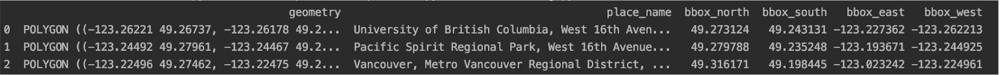

CPSC 203, 2026 W1
November 12, 2026
Finish slides from previous lecture.
We have seen graphs and corresponding algorithms for:
| Data | Task | Algorithm |
|---|---|---|
| Images / grids | Voronoi diagrams / flood fill | breadth first search |
| Music / evolving systems | sampling / simulation | Markov chains |
| Games | path to solution | depth first search |
Next few lectures:
Geospatial data is often stored as a graph.
In geospatial data sets, nodes often have associated location information.
When thinking of the data set as a graph, location information may be:
An open-source alternative to the data behind Google / Apple maps:
https://www.openstreetmap.org/

osmnx module.Open today’s activity. You will:
Launch Class Activity: Fun with Open Street Maps in PrairieLearn.